Unit 3 AOS2 – Analysis and Design
Problem-solving methodology
The four stages of the “problem-solving methodology” are:
- Analysis
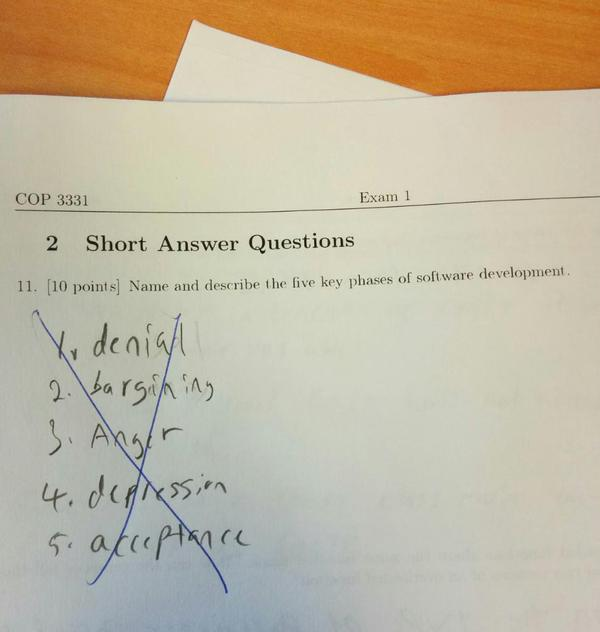
- Design
- Develop
- Evaluate
Over all these stages, there will be some project management, namely:
- Develop a project plan (Gantt chart)
- Monitor and modify the plan
- Evaluate the effectiveness of the plan
In each stage:
| Unit 3 Outcome 2 | Unit 4 Outcome 1 | ||
|---|---|---|---|
| Analysis | Design | Develop | Evaluate |
Project management
| Project management
| ||
|
|
|
|
from VCAA Assessment (accessed 21 Apr 2025)
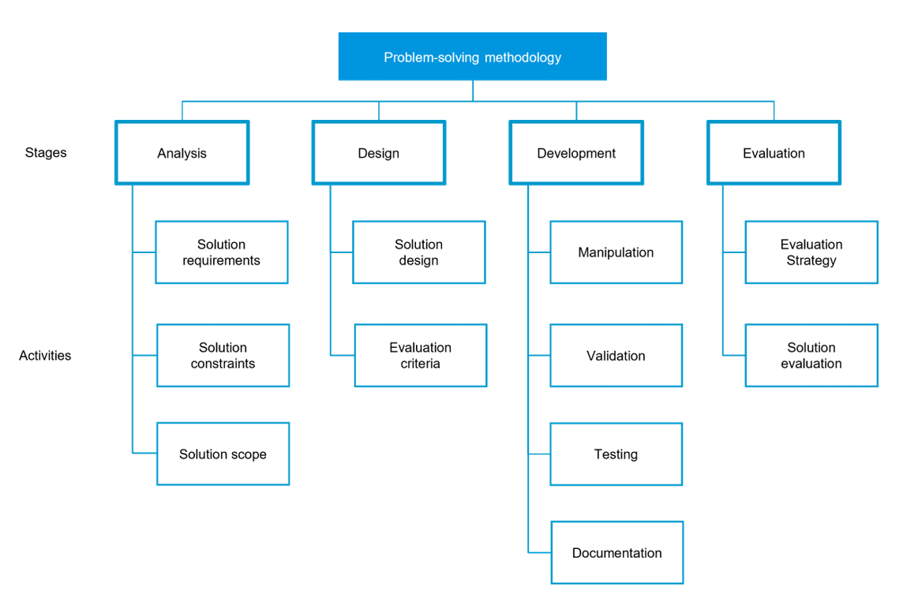
As per the study design there are stages and activities in the PSM as seen above. See “Units 1 to 4: Problem-solving methodology specifications" in the Study design to see a breakdown of the activities:
Reasons why individuals and organisations undertake software development projects
| Increased efficiency and productivity via the automation of processes |
|
| Reducing costs |
|
| A reduction of human error |
|
| Identifying opportunities to address gaps in the market |
|
| Meeting organisational objectives or needs |
|
| Improved communication |
|
Features of a brief that documents a problem, need or opportunity
| Problem/need/opportunity outline |
|
| Proposed users |
|
| Programming languages to be used |
|
| Feasibility |
|
| Originality |
|
Project management using Gantt charts
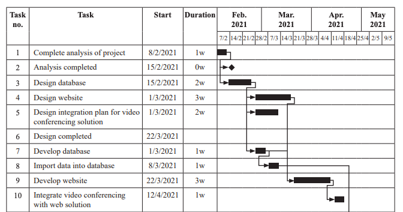
(from 2021 exam)
The key aspects of a Gantt chart are:
| Description | Shown on a Gantt chart by: | |
| Tasks | Identify all the tasks needed to complete the project. | Each task is a row. |
| Time allocation | Estimate how long tasks will take. | Shading |
| Dependencies | Some tasks will require other tasks to be completed first. | An arrow ( ↴ ) from the end of one task to the start of another. |
| Milestones | “Milestones indicate the completion of a key task” (2019 Exam Report) Take no time (zero duration). | Diamond symbol ♦ For exams, go on the line between time periods: 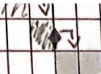 |
| Critical path | The set of tasks that must be completed on time, otherwise the whole project is delayed. | (No formal VCAA way to do this) Highlight tasks in some way e.g. different colour/shading, bolded outlines? |
Identifying/sequencing of tasks
To identify tasks, it is pretty much a to-do list of everything which needs to be completed in a given stage.
To determine sequencing of tasks, they should be within the correct stage and then be in the order they will be completed, based on dependencies.
Monitoring and documenting progress
As you use a Gantt chart through a project, there will inevitably be changes. This can include making adjustments to tasks, time allocations and recording details in journals or work logs. Annotations can be used on Gantt charts to explain changes.
Where to put milestones
For the exam, good places to put a milestone include:
- The end of one of the stages: Analysis, Design, Develop, Evaluate
- At the start of a task that has multiple dependencies i.e. must coordinate to get A, B and C all done before starting D. The end of A, B and C is a milestone.
Data collection techniques
The four (4) data collection techniques in the Study Design are:
| Description | Advantages | Disadvantages | |
| Interviews | Have a structured conversation with someone. | Compared to a survey, answers can be more in depth. Also they are more flexible because you can ask follow-up questions to clarify what you don’t understand or get more information. | Time consuming to arrange and conduct. |
| Observation | Watch a process in action e.g. a shop serving customers, a factory floor making products. | Observers can identify things the participants themselves are unaware of (which therefore they wouldn’t tell you in a survey or interview). | Observers may not have knowledge to observe usefully. |
| Reports | Review existing data reports e.g. company’s manufacturing statistics, error logs, complaints summary. | Cheap - this data is already collected for you. | Often not the exact data that you want. If looking at summarised data you may not be able to “dig into it” as much as you want. |
| Surveys | Send out a questionnaire. | Cheap and easy to run. Can give quantitative data which is easily aggregated and compared to measurable criteria. | May have biased response rates i.e. some people are more or less likely to respond to surveys which will distort data. |
Functional and non-functional requirements
Requirements detail what the software should do (functional requirements) and what it should be (non-functional requirements).
Functional requirements include specific details such as
- input required,
- output developed and
- functions of the solution including data manipulation and validation.
Examples:
- Saving customer data to a file (2021 VCAA)
- Count the number of coffees purchased (2022 VCAA)
- Sort a customer’s purchase history by date (2022 VCAA)
Non-functional requirements describe quality attributes of the solutions, including:
| Category | Definition | Example |
| Usability | Ease of use of the system and ease to learn, can be described by the effectiveness/efficiency | Client wants the app to have the same colour scheme as other branding (2018 VCAA) |
| Reliability | Refers to how reliable the solution is in terms of how it functions and for how long | Online ordering must be available 24 hours a day, seven days a week (2018 VCAA) |
| Portability | Ease of use in different technical environments | All users of the solution will be using their own mobile device (2019 VCAA) |
| Robustness | Solutions response to errors in the system | Data validation is completed on data as it is entered into the system |
| Maintainability | How easy it is to maintain after it is in use | Maintaining the solution will take 3 hours a month |
Constraints
The four (4) types of constraints are:
| Examples (quoting the Study Design): | |
| Economic | cost and time; |
| Technical | speed of processing, capacity, availability of equipment, compatibility and security; |
| Social | level of expertise of users; |
| Legal | intellectual property, ownership of data, privacy of data |
Solution scope
Version/Solution boundaries
This is the boundary of what is and is not included within your solution. Identify what will be and/or what will not be addressed by the solution.
“[Scope is] the part of project planning that involves determining and documenting a list of specific project goals, deliverables, tasks, cost and deadlines” - 2020 VCAA exam report
Context diagram (Level 0)
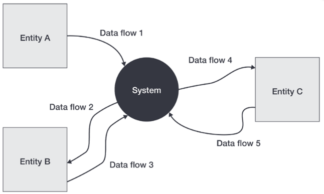
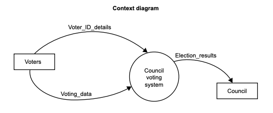
From VCAA 2015 Exam
| Definition | Context diagrams (Level 0) are used to represent the data flows between a system and external entities. |
| Includes | Context diagrams (Level 0) with the components of a system, and entities and data flows. |
The three (3) components in a context diagram are:
| Name | Symbol | Description |
| System | 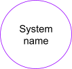 |
|
| External entity | 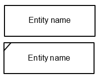 |
|
| Data flow | 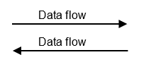 |
|
Context diagrams rules:
- Data cannot flow directly between two entities.
- Data flows cannot cross each other.
- Each data flow should only represent a single set of information being transferred.
Data flow diagrams (Level 1)
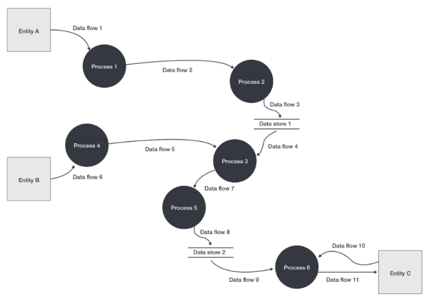
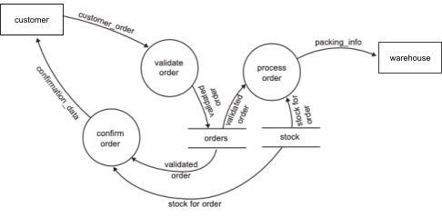
From VCAA 2006 Exam
| Definition | Data flow diagrams (Level 1) depict the flow of data within a system, illustrating how data is provided, processed, stored and output. |
| Includes | Data flow diagrams (Level 1) with the components of processes, entities, data stores and data flows. |
Data flow diagrams should be consistent with context diagrams that depict the same system.
The four (4) components in a DFD are:
| Name | Symbol | Description |
| Process |
| |
| Entity |
| |
| Data flow |
| |
| Data store |
|
Data flow diagram rules:
- Data cannot flow directly between entities.
- Data cannot flow directly between data stores.
- Data cannot flow directly between an entity and data store/s.
- Data flows cannot cross each other.
- Each data flow should only represent a single set of information being transferred.
- A process must have at least one input and one output.
- A data flow that outputs from a process should be different in name to the input received.
- A data store must have at least one input and one output.
- All processes within the system must be connected to at least one data store or process within the system, or an external entity.
- All external entities must, at least, provide one input or receive one output from the system.
Use case diagrams
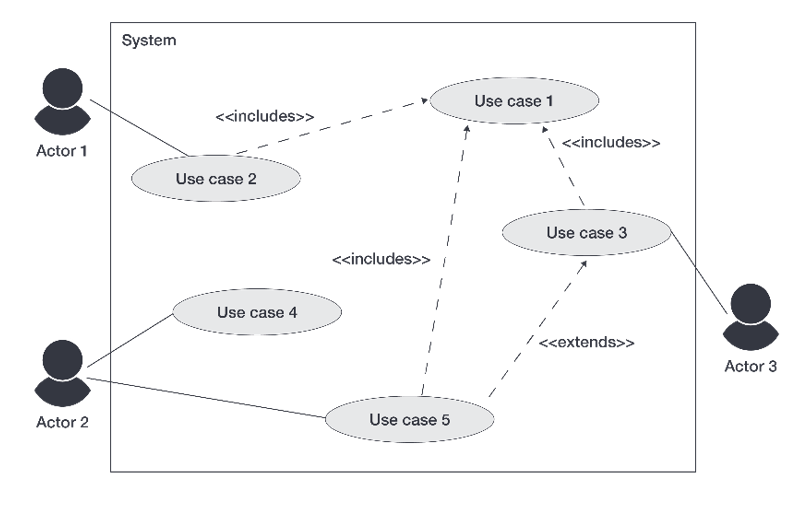
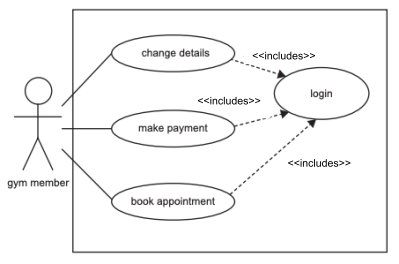
From VCAA 2020 Exam
| Definition | A use case diagram visually represents the interactions between users and a system. |
| Includes | Use case diagrams with the components of a system boundary, actors, associations, relationships (includes and extends) and use cases. |
The four (4) components in a use case diagram are:
| Name | Symbol | Description |
| System boundary | 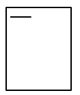 |
|
| Actor | 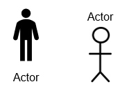 |
|
| Use case |
| |
| Association | (just a line) |
|
| Relationships | ||
| Includes | 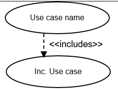 |
|
| Extends | 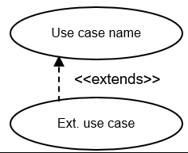 |
|
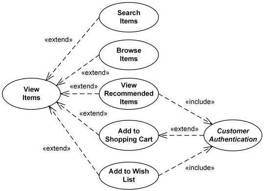
Software requirements specification (SRS)
A software requirements specification (SRS) is a document to make sure that you fully understand what problem it is that you are solving before you attempt to design or build a solution. The intended purpose and environment of a software solution. It documents the key activities associated with the analysis stage of the problem-solving methodology.
The purpose of an SRS is to “document the needs of the stakeholders and indicate how the system is expected to perform” (from 2020 Exam Report).
The SRS includes:
- the identified problem, need or opportunity
- functional requirements
- non-functional requirements
- constraints
- scope
- user characteristics (general characteristics of the proposed users for the software solution)
- technical environment (description of the environment in which the software solution will operate)
- analytical tools depicting existing processes and systems
- context diagrams
- data flow diagrams
- use case diagrams
Legal requirements
A quick summary of the 3 pieces of legislation are:
| Federal or state? | Main focus | Privacy Principles | |
| Copyright Act 1968 | Federal | Copyright | - |
| Privacy Act 1988 | Federal | Personal information handled by some private organisations and by Australian Government agencies | 13 Australian Privacy Principles (APPs) |
| Privacy and Data Protection Act 2014 | Victoria only | Personal information (except health) handled by Victorian public sector organisations | 10 Information Privacy Principles (IPPs) |
The Copyright Act 1968
Federal or state? Federal
Who does it apply to?
- Everyone (government, companies and individuals) with some minor technical exceptions which we can ignore
What is copyright?
- “Copyright is a form of intellectual property that protects the original expression of ideas.” (from)
How to copyright something:
- Copyright protection is free and is automatically granted to the creator when material is created.
- There is no registration system for copyright in Australia.
What is covered:
- Artistic, dramatic and musical works
- Text
- Software programs
What is not copyrighted:
- Ideas (only their “expression”)
- E.g. You can also write a TV show about a workplace where a salesman is in love with the receptionist and the boss makes “That’s what she said” jokes. What you can’t do is lift “important or distinctive parts” from the “The Office”.
- Inventions (covered by patents)
- Names, titles or slogans (this is covered by trademarks).
The purpose of copyright is to:
- Incentivise creators to make new works and give them control of their creations.
Fair dealing but not “fair use” (like in the US):
- You can use copyrighted material without permission for:
- research or study
- criticism or review
- parody or satire
- reporting the news
- provision of legal advice.
- This is a much stricter standard than e.g. the “fair use” standard in the US.
The Privacy Act 1988
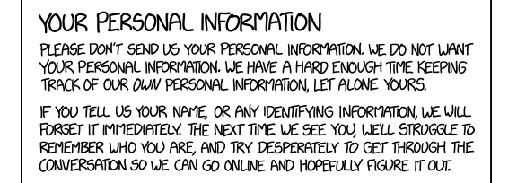
Federal or state? Federal
Who does it apply to?
- Australian Government agencies
- organisations with an annual turnover more than $3 million
- an organisation that provides a “health service” e.g.
- Doctors, hospitals, allied health
- Gyms or weight loss clinics
- Childcare and private schools
- a business that sells or purchases personal information
Who does it not apply to?
- state or territory government agencies
- universities, government schools
- individuals
- some other exceptions exist.
Organisations should have a privacy policy (APP 1), which states:
- the organisation’s name and contact details
- what kinds of personal information they collect and store
- how they collect personal information and where it is stored
- the reasons why they need to collect personal information
- how they’ll use and disclose personal information
- how you can access your personal information, or ask for a correction
- how to lodge a complaint if you think your information has mishandled, and how they’ll handle your complaint
- if they are likely to disclose your information outside Australia and, if practical, which countries they are likely to disclose the information to
The applicable Australian Privacy Principles are:
Copied from the official summary.
| APP 1 | Open and transparent management of personal information | Ensures that APP entities manage personal information in an open and transparent way. This includes having a clearly expressed and up to date APP privacy policy. |
| APP 3 | Collection of solicited personal information | Outlines when an APP entity can collect personal information that is solicited. It applies higher standards to the collection of sensitive information. |
| APP 6 | Use or disclosure of personal information | Outlines the circumstances in which an APP entity may use or disclose personal information that it holds. |
| APP 8 | Cross-border disclosure of personal information | Outlines the steps an APP entity must take to protect personal information before it is disclosed overseas. |
| APP 9 | Adoption, use or disclosure of government related identifiers | Outlines the limited circumstances when an organisation may adopt a government related identifier of an individual as its own identifier, or use or disclose a government related identifier of an individual. |
| APP 11 | Security of personal information | An APP entity must take reasonable steps to protect personal information it holds from misuse, interference and loss, and from unauthorised access, modification or disclosure. An entity has obligations to destroy or de-identify personal information in certain circumstances. |
The Privacy and Data Protection Act 2014
Federal or state? Victoria only
Who does it apply to?
- Victorian public sector organisations
- local councils
- government schools, universities and TAFEs
- Ministers, parliamentary secretaries
- Bodies established or appointed for a public purpose by or under an Act i.e. Victorian public universities
- Courts, tribunals, Victoria police
- Contracted service providers - Victorian government contracted service provider
The applicable Information Privacy Principles are:
A copy of this official summary
| IPP 1 | Collection | An organisation can only collect personal information if it is necessary to fulfil one or more of its functions. It must collect information only by lawful and fair means, and not in an unreasonably intrusive way. It must provide notice of the collection, outlining matters such as the purpose of collection and how individuals can access the information. This is usually done by providing a Collection Notice, which should be consistent with an organisation's Privacy Policy. |
| IPP 2 | Use and disclosure | Personal information can only be used and disclosed for the primary purpose for which it was collected, or for a secondary purpose that would be reasonably expected. It can also be used and disclosed in other limited circumstances, such as with the individual's consent, for a law enforcement purpose, or to protect the safety of an individual or the public. |
| IPP 4 | Data security | Organisations need to protect the personal information they hold from misuse, loss, unauthorised access, modification or disclosure. An organisation must take reasonable steps to destroy or permanently de-identify personal information when it is no longer needed. |
| IPP 5 | Openness | Organisations must have clearly expressed policies on the way they manage personal information. Individuals can ask to view an organisation's Privacy Policy. |
| IPP 7 | Unique identifiers | A unique identifier is an identifier (usually a number) that is used for the purpose of identifying an individual. Use of unique identifiers is only allowed where an organisation can demonstrate that the assignment is necessary to carry out its functions efficiently. There are also restrictions on how organisations can adopt unique identifiers assigned to individuals by other organisations. |
| IPP 9 | Transborder data flows | If an individual's personal information travels outside Victoria, the privacy protection should travel with it. Organisations can only transfer personal information outside Victoria in certain circumstances, for example, if the individual consents, or if the recipient of the personal information is subject to a law or binding scheme that is substantially similar to the Victorian IPPs. |
| IPP 10 | Sensitive information | The PDP Act places special restrictions on the collection of sensitive information. This includes racial or ethnic origin, political opinions or membership of political associations, religious or philosophical beliefs, membership of professional or trade associations or trade unions, sexual preferences or practices, and criminal record. Organisations can only collect sensitive information under certain circumstances. |
File management techniques
In order to manage files appropriately there are five (5) categories:
- the use of naming conventions
- version control
- backups (full, incremental, differential)
- security
- disposal
Use of naming conventions
Naming conventions make files easier to manage as they can be more easily identified. The information in a file name can provide information as to what is in the file, when it was made and its format.
Version control
Description:
“Version control is a system that records changes to a file or set of files over time so that you can recall specific versions later.”
Benefits of version control:
- If you make a change to a project that breaks something or if files are lost, it is easy to recover (and recover back to a specific point in time).
- It is easier to keep track of changes and updates made to the code.
- It provides a controlled and stable way to merge together different developers’ work.
- You can identify who might have introduced an issue and where. In a team of developers this lets you find out who to ask about a change that might have caused a problem.
Dangers of not using version control:
- Assuming you have another form of backup, it may take longer to recover work, or not all up-to-date work may be recovered if it was not caught in the last backup.
- It is harder to track what code was changed, when and by whom, which may slow down bug fixes.
- It also makes later evaluation harder as there is no record of the progress of the development, as well as a record of what worked and what didn’t.
When to use version control:
- When you are developing a project that would have multiple developers working on
- When significant changes are made consistently to the project
Backing up files
Backing up data involves making a copy of data, in case the original source of data is lost or corrupted.
A backup strategy should consider:
| What data should be backed up | Really, anything you don’t want to lose... |
| What type of backup to use | There are 3 types of backups:
A table comparing these different methods can be found here. |
| When (how often) to back up the data | Usually at regular intervals e.g. full backup every month plus incremental backup daily |
| How will it be completed | Can be done manually or run automatically |
| Where the backed up data will be stored | Options include:
|
| Who is responsible for the process? | Probably automated, but designate someone to supervise/check. |
| Other | Regularly test that you can restore from backups i.e. backups are working correctly. Backups are restored when data loss occurs. |
Security
Ensuring files are stored securely is important. It isn’t clear yet what VCAA wants here, so some ideas include:
- File encryption, ensuring only authorised people can read the files
- Secure access to where it is stored
- User authentication
Disposing of files
Disposing is just deleting this data instead of keeping it long-term.
A disposal strategy should consider:
| What data should be disposed of OR kept around as current data | Data kept as current will be easily accessible, but large databases or many files slow retrieval and backing up. |
| When (how often) to dispose of data | Usually at regular intervals e.g. daily, weekly, monthly, quarterly? |
| If archiving, ... | Where to store it:
|
Ideation techniques and tools
Mood boards
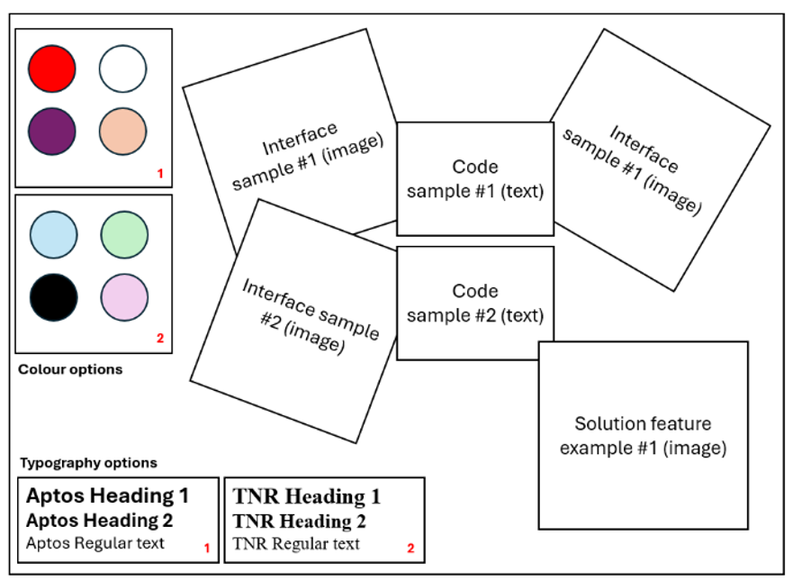
Mood boards are used to collate imagery, colours, typography and code samples to explore and inspire the overall direction of the design of the software solution.
Samples may be annotated to indicate potential applicability to the solution, specific features to be/not to be included, as well as reasoning why identified elements should/shouldn’t be applied within the final design.
Brainstorming
Brainstorming results in an unstructured collation of related ideas, based around a central theme/concept.
Brainstorming can be documented as a list of ideas, or as a diagram. When documented as a diagram:
- The central theme/concept is represented using a rectangle, cloud-shape or ellipse.
- Related ideas (as words) are connected to the central theme/concept using straight lines.
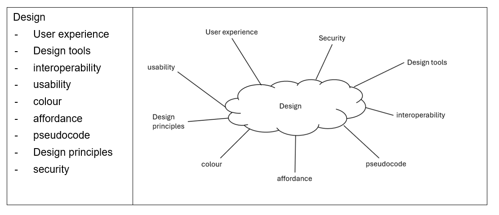
Mind maps
Mind maps are a structured collation of related ideas, based around a central theme/concept, represented as a diagram.
The central theme/concept is represented using a rectangle, cloud-shape or ellipse.
Related ideas (as words) are connected to the central theme/concept using straight lines. Ideas branch out further as required.
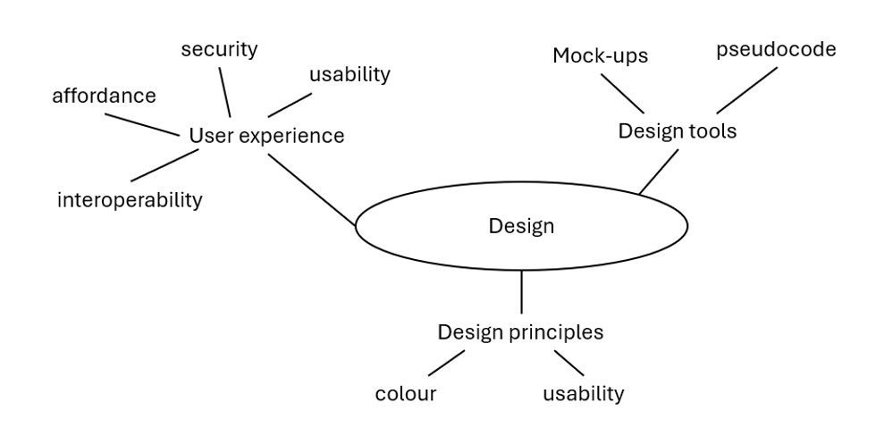
Sketches
Sketches are unrefined illustrations that briefly depict an interface or indicate how different components of the software solution could be linked or interact.
Sketches may be drawn either by hand or using digital drawing tools.
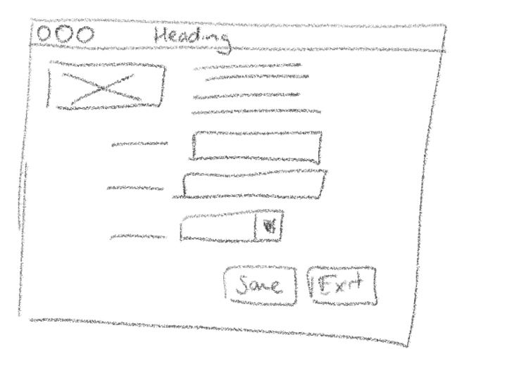
Annotations
Annotations can be used to organise thoughts and highlight or justify design considerations within design ideas, as well as propose or establish connections between design ideas.
Evaluation criteria for designs
Evaluation criteria are short statements that can be used to determine whether one of two designs is better or worse than another.
- They often are based on the measures of effectiveness or efficiency below.
- Could also be based on applicable elements of the SRS.
- They should be as specific and measurable as possible.
Examples of evaluation criteria for a design are:
- It is easy for users to understand the purpose of each button and input field.
- The website can be accessed by someone who is blind or visually impaired.
- Input fields don’t allow users to enter invalid data.
- Input fields allow users to enter data quickly.
Efficiency and effectiveness
We measure how efficient or effective a software solution is, or how efficient and effective parts of a user interface in a design are.
Effectiveness
Definition: A measure of how well solutions, designs, data and information security strategies and development practices function, and the degree to which they achieve their intended purpose.
From the Study Design, the 11 measures of effectiveness in a solution include:
- Accessibility: the solution can be used by people with a range of abilities
- Accuracy: the solution allows/encourages the entry of valid data, or for the user to enter what they really mean, OR calculations/results provided by the software are accurate
- Attractiveness: the solution is pleasant to look at
- Clarity: the solution is clear i.e. it is easy to understand what buttons or icons are for, it is easy for users to know where to go or look or click to get a task done.
- Communication of message: the solution communicates the intended message i.e. meaning.
- Completeness: the solution covers all requirements
- Maintainability: how easy the solution is to maintain once in use, e.g. structures around maintenance, guides for users, error logging for users
- Readability: text within the solution is easy to read
- Relevance: the solution only contains what is required, and nothing extra which might distract or confuse the user
- Timeliness: the solution presents data that is up-to-date, OR the data completes tasks in a timely fashion e.g. page load times on a website, or queries/searches.
- Usability: the solution is easy to use
Efficiency
Definition: A measure of how much “time, cost and effort” is applied to achieve intended results.
From the Study Design, the 3 measures of efficiency in a solution could include:
- the cost of data and file manipulation,
- its functionality and
- the speed of processing.
Characteristics of user experience (UX)
The consideration of how users perceive and respond when interacting with a digital system. Characteristics of UX include affordance, interoperability, security (authentication and data protection) and usability. The 4 characteristics which affect a software design are:
| Affordance | “intuitiveness of usability of a user interface” (from VCAA 2022 CS Q5a) The layout and presentation and labelling of elements in a design help users understand how to use the website. E.g.
|
| Interoperability | As appropriate for the client’s requirements, the design can be used across:
|
| Security (authentication and data protection) | The design protects the integrity of user data and the solution’s functionality as well as appropriate authentication. |
| Usability | The design does not confuse users, and is able to be accessed by users who are e.g. colorblind, blind, deaf. |
Design principles
These are the 7 design principles:
Some definitions copied from toptal
| Appearance | Alignment | How elements are aligned, if they are aligned this is more pleasing then unaligned |
| Balance | All design elements and principles—typography, colors, images, shapes, patterns, etc.—carry a visual weight. The way these elements are laid out on a page should create a feeling of balance. There are two basic types of balance: symmetrical and asymmetrical. Symmetrical designs layout elements of equal weight on either side of an imaginary center line. Asymmetrical balance uses elements of differing weights, often laid out in relation to a line that is not centered within the overall design. | |
| Contrast | Refers to how different elements are in a design, particularly adjacent elements | |
| Space | Not necessarily specifically white space but, white space—also referred to as “negative space”— is the area of a design that does not include any design elements. | |
| Text formatting | Consistent and clear text formatting consistent with the content, e.g. font size, colour spacing | |
| Usability | Usability | How easy it is for the user to understand, use and interpret the solution |
| Functionality | Navigation | Refers to how easy it is for the user to move through different areas of the solution |
PRIOR TO 2025 STUDY DESIGN CONTENT
Goals and objectives
Can be goals and objectives of:
- Organisations (about companies main purpose: making goods and services to do X)
- Informations systems (what problem does the software solution solve)
Goal: high level aim
Objective: specific, measurable(?) way to achieve goal
E.g from 2017 exam

Comparing design elements
Not in the study design per se, but useful for exam questions and comparing designs in the SAT
| Design choice | Advantages |
| Text labels | |
| Icons | |
| Text entry | |
| Dropdown menu | |
| Date/time picker |